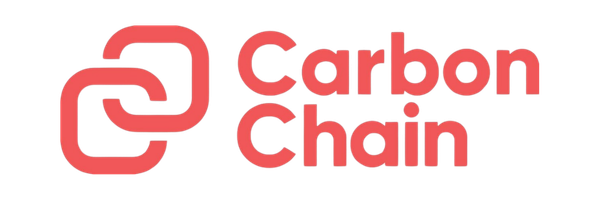
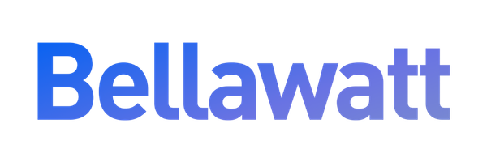
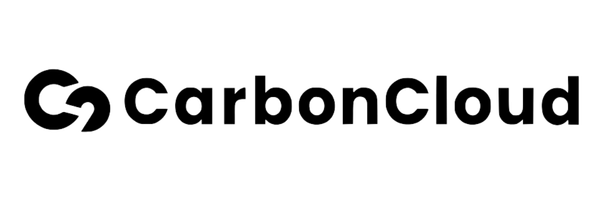
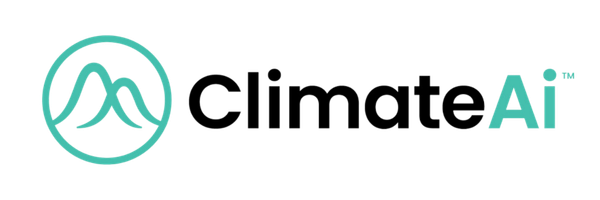
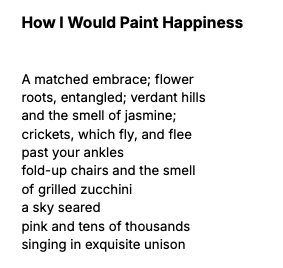
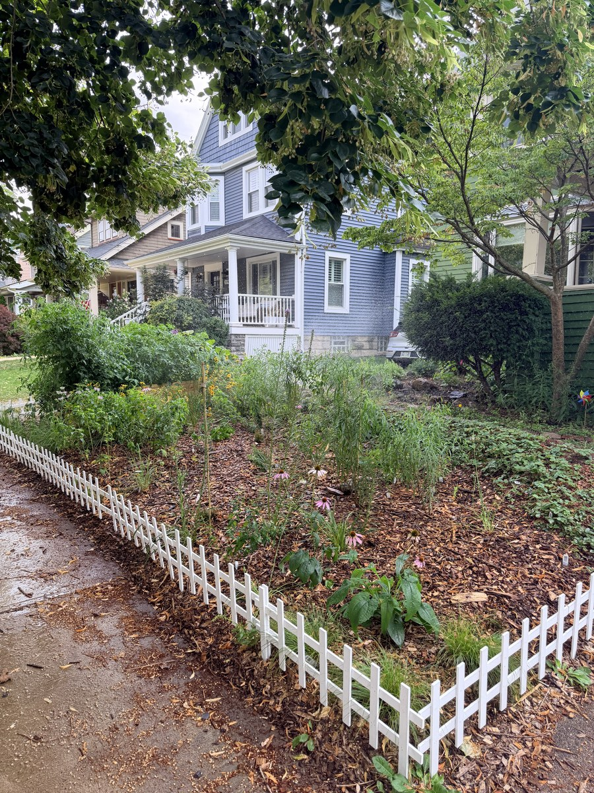

Meg Kendall is a multi-passionate writer and analyst. She is fascinated by the intersection of technology and nature, with a keen interest in the carbon markets, environmental policy, and a reverence for the more-than-human world.
At a Glance
Education
BSBotany
MSOrientation and Mobility
MPAMaster of Public AdministrationIn Progress
Work
Hospitality
A decade waiting tables and behind the bar — reading rooms, managing competing demands in real time, and keeping composure under pressure.
Orientation and Mobility Specialist
Assessing how the built environment excludes, and designing individualized paths through it for students with visual impairments.
Managing Director, The Climate Hub
A specialist communications agency for clean energy, resources, and environment, working primarily with climate tech and the carbon markets.
The Journey
Through botany, I kindled a love of effective science messaging. Through Orientation and Mobility, I learned about accessibility as a design problem rather than a personal one, a lesson I didn't yet know I'd carry into environmental work. Science and systems shaped how I think about language: as a tool not just for translation, but for transformation.
I've spent five years as a ghostwriter and strategist for the scientists and companies building the Voluntary Carbon Market (VCM), translating complex climate science into the clear narrative and evidence base that let a nascent industry earn trust. I co-founded The Climate Hub to do that work at scale, across clean energy, resources, and environment. Our clients were rethinking the systems we live in, and they needed stories that did that work justice.
Today, I'm interested in bringing that work closer to home. I'm adding the language of public administration and data analysis to the languages of science and story I already speak.
I'm looking at a return to scale — from global markets to the community I live in, from abstraction to something I can walk. I'd like to enjoy the view.
The Climate Hub Highlights
The Climate Hub works with companies across three broad industry verticals, united by their technical complexity, capital intensity, and critical role in the economy of the future.
Clean Energy
Resources
Environment
Ghostwriting for climate scientists — including translating SBTi's latest updates, and what they mean for corporates procuring carbon removal
Advising USAID's (RIP) former climate security portfolio lead
Crafting narrative and evidence for the companies at the forefront of carbon markets and climate policy — fact sheets, whitepapers, key messaging, policy explainers, and internal stakeholder communications
Selected Clients and Partners




What I'm Working On
SQL Fundamentals
Python for Everybody
PowerBI Fundamentals
Data Storytelling
AI Fluency
GIS Foundations
Public Administration in the City
Environmental & Sustainability Planning
Tree Canopy, Demographics & Environmental Burden in Cuyahoga County
Volunteering at CDP, an off-grid community on 20 acres of redwood forest outside Santa Cruz — highlight: planting a 100+ tree fruit orchard
Studying planetary herbology under renowned herbalist and clinician Michael Tierra (three years running at the East West Herb Seminar)
Returning to school as a "non-traditional" student (read: in my 20s) to study botany
Starting fresh in NYC, working with visually impaired grade school students in the Bronx
Launching a freelance writing career in the climate tech niche
Co-founding and scaling a specialist communications agency spanning clean energy, resources, and environment
Helping to scale the VCM as a testbed for what comes next: helping ecosystem players build trust and communicate nuance in an accessible way as they figured out the accounting and mechanics
Helping the private sector sell into Fortune 500s — realizing I want to make a difference closer to home
Discovering that data storytelling — GIS, canopy maps, census tracts — can do for a neighborhood what The Climate Hub already does for climate tech
New chapter: enrolling in CSU's MPA program
Core Beliefs
Life holds only the meaning you ascribe to it.
Work is play and play is work and work is play is work is play is work ☯
Nature is the symbol of spirit.
Documenting creatively is one of the keys to a Good Life.
The inevitability of the intersection of tech and nature: I believe in a world where the systems and technologies we rely on are designed to work with nature by default, instead of pretending we exist outside of it.
Formative Media
Books
Ways of Being — James Bridle
The Moth Snowstorm — Michael McCarthy
A Natural History of Empty Lots — Christopher Brown
Sight Lines — Arthur Sze
In Watermelon Sugar — Richard Brautigan
East of Eden — John Steinbeck
Eros the Bittersweet — Anne Carson
Beyond Criticism — Karl Shapiro
Four Thousand Weeks — Oliver Burkeman
Every Living Thing — Jason Roberts
The Light Eaters — Zoë Schlanger
Who Really Feeds the World? — Vandana Shiva
Music
Songs From a Room — Leonard Cohen
Strawberry Jam — Animal Collective
40+ Dead & Company shows
Podcast
On Being with Krista Tippett
Beyond Work
I'm an avid reader, writer, and student of poetry. I know of no better way to alchemize magic; to say what can't otherwise be said.

I like wild and liminal spaces, spring ephemerals, and cappuccinos. I love watching old tv shows while making french beaded flowers.
I'm newly obsessed with creating native plant habitats; I live in a green house and have killed its front lawn in favor of wild strawberry, azure bluet, wild bergamot, dense blazing star, little bluestem, tall thimbleweed, culver's root, and more (year one pictured!). I think such actions should be incorporated into city planning. I like a wild garden. I'm obsessed with flowers: my favorites include chicory and goldenrod. (Chicory brightens up the roadside rubble; goldenrod reminds me that this world can spin gold yet.)

I resonate with Rebecca Solnit's view of “stubborn hope.” My family has three cats: Lilah, Piggy, and Zohran Mamdani. And I love Toblerones.
.png)

![Poem, "In this winter, there is only snow," after Arthur Sze. A cold fog hugs the ground, and warms— An ad says Canada wants me— The cunning crow reflects sun and sky in its feathers— Soon the valley will speckle with bluebell; purple cress; hepatica— Earth will do its best to mitigate: phlox and wood poppy for our troubles— Do you remember how the train tracks seemed when we were young? In a twinkling: trillium— Myrmecochory brings its flower, and we rejoice— [Bowing down, we cry thanks to the ostentatious ant] Against a pale blue sky, a silhouette swoons— A mother slips on the ice— Even regret is lovely—](uploads/poem-in-this-winter-there-is-only-snow.png)
![Poem, "Sheer red and tasting of dream." We laugh with light inside as juice of strawberry dribbles down our fragile wrists; dewy lips dimpled with seed. Inside concinnity of songbird, I can almost hear your thoughts: cold lucidity // babble of stream // capture me: I go willingly. You're still with me. Lost in melodic trill of wood thrush; chitter of red-eyed vireo; chick-burr of scarlet tanager We float up up up into dappled contrast of shimmer on strawberry leaf, refracting glimmers; trailing in our wake](uploads/poem-sheer-red-and-tasting-of-dream.png)
.jpeg)